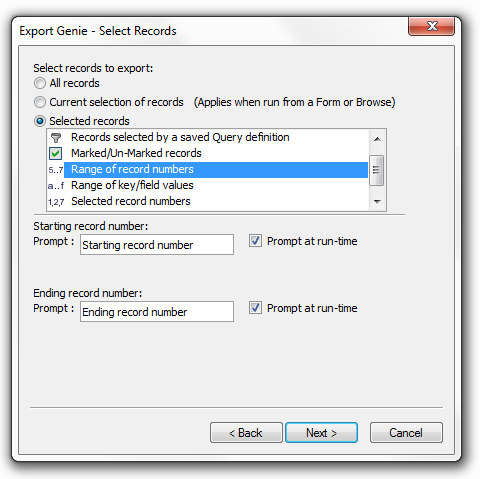
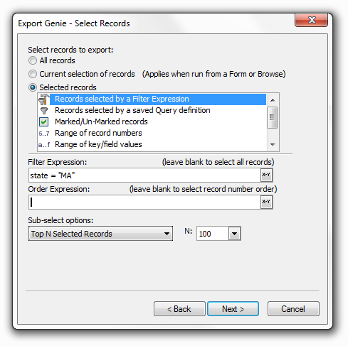

Selecting Records for Operations
When you create a new operation the following toolbar appears. The Select Records button makes it very easy to select the records that the operation will operate on.
For example, in defining an Export operation, you can now easily instruct Alpha Anywhere to export records with record numbers between 10 and 20. Furthermore, you can instruct Alpha Anywhere to prompt for the range at run time.

Record selection options include a range of record numbers, selected record numbers, range of key values, and selected key values. For example, you can specify a starting and ending record number (e.g. records 10 through 90), or a starting and ending key value (e.g. last names between "Jones" and "Marks").
Other record selection options include, including the ability to select the "top x records" or "top x percent of records" in a query. For example, you may want to export just the top 100 records for "State = 'MA' " to Excel.

See Also